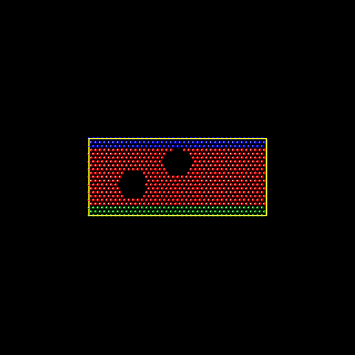

组里面偏向于固体材料这边，所以经典MD用的是Lammps而不是Gromacs（我猜的😢）
这还是第一次接触Lammps，记录一下。
Lammps的编译安装
首先是软件安装这块。依旧是编译安装，有张破烂P104显卡就编译GPU版本了，这破烂GPU的PCIE带宽很低，双精度极弱，所以采用GPU Package 的方案而不是KOKKOS 。
参考的博文随便找了一篇：https://pa.ci/417.html
进行配置：
1 2 3 4 5 6 7 8 9 10 11 12 13 14 15 16 17 18 19 20 21 22 23 cmake ../cmake \ -D CMAKE_BUILD_TYPE=Release \ -D CMAKE_INSTALL_PREFIX=/home/storm/apps/lammps_installation \ -D BUILD_SHARED_LIBS=on \ -D LAMMPS_EXCEPTIONS=on \ -D FFT=FFTW3 \ -D BUILD_MPI=on -D BUILD_OMP=on \ -D BLA_VENDOR=OpenBLAS \ -D CMAKE_Fortran_COMPILER=gfortran \ \ -D PKG_GPU=on -D GPU_API=cuda -D GPU_ARCH=sm_61 \ -D PKG_OPENMP=on -D PKG_OPT=on \ \ -D PKG_KSPACE=on \ -D PKG_ELECTRODE=on \ -D PKG_COLVARS=on \ -D PKG_PYTHON=on \ -D PKG_H5MD=on -D PKG_NETCDF=on \ -D PKG_VORONOI=on \ -D PKG_MISC=on -D PKG_COMPRESS=on \ -D PKG_RIGID=on -D PKG_MOLECULE=on \ -D PKG_MOLFILE=on \ -D BIN2C=/usr/local/cuda/bin/bin2c
然后开始编译：
然后安装：
然后加入环境变量：
1 export PATH=/home/storm/apps/lammps_installation/bin:$PATH
设置lmp动态库：
1 echo '/home/storm/apps/lammps_installation/lib64' | sudo tee /etc/ld.so.conf.d/lammps.conf
然后可以检查一下是否安装正常：
1 2 3 4 5 6 7 8 9 10 11 12 13 14 15 16 17 18 19 20 21 22 23 24 25 26 27 28 29 30 31 32 33 34 35 36 37 38 39 40 41 42 43 44 storm@WOL-142:~/apps/lammps_installation/lib64$ sudo ldconfig storm@WOL-142:~/apps/lammps_installation/lib64$ which lmp ~/apps/lammps_installation/bin/lmp storm@WOL-142:~/apps/lammps_installation/lib64$ lmp -help | head n 1 head : 无法以读模式打开 'n' : 没有那个文件或目录head : 无法以读模式打开 '1' : 没有那个文件或目录storm@WOL-142:~/apps/lammps_installation/lib64$ lmp -help Large-scale Atomic/Molecular Massively Parallel Simulator - 22 Jul 2025 - Update 4 Git info (stable / stable_22Jul2025_update4) Usage example: lmp -var t 300 -echo screen -in in.alloy List of command-line options supported by this LAMMPS executable: -echo none/screen/log/both : echoing of input script (-e) -help : print this help message (-h) -in none/filename : read input from file or stdin (default) (-i) -kokkos on/off ... : turn KOKKOS mode on or off (-k) -log none/filename : where to send log output (-l) -mdi '<mdi flags>' : pass flags to the MolSSI Driver Interface -mpicolor color : which exe in a multi-exe mpirun cmd (-m) -cite : select citation reminder style (-c) -nocite : disable citation reminder (-nc) -nonbuf : disable screen/logfile buffering (-nb) -package style ... : invoke package command (-pk) -partition size1 size2 ... : assign partition sizes (-p) -plog basename : basename for partition logs (-pl) -pscreen basename : basename for partition screens (-ps) -restart2data rfile dfile ... : convert restart to data file (-r2data) -restart2dump rfile dgroup dstyle dfile ... : convert restart to dump file (-r2dump) -restart2info rfile : print info about restart rfile (-r2info) -reorder topology-specs : processor reordering (-r) -screen none/filename : where to send screen output (-sc) -skiprun : skip loops in run and minimize (-sr) -suffix gpu/intel/kk/opt/omp: style suffix to apply (-sf) -var varname value : set index style variable (-v) OS: Linux "Rocky Linux 10.2 (Red Quartz)" 6.12.0-211.22.1.el10_2.x86_64 x86_64 Compiler: GNU C++ 14.3.1 20251022 (Red Hat 14.3.1-4) with OpenMP 4.5 C++ standard: C++17 Embedded fmt library version: 10.2.0
至此，安装完成
Lammps学习
关于脚本
举个例子：
1 2 variable x equal (xlo+xhi)2 + sqrt(v_area) region 1 block $X 2 INF INF EDGE EDGE
定义变量x
$X传递变量
v_使用于定义变量的表达式中
1 region 1 block $((xlo+xhi)2+sqrt(v_area)) 2 INF INF EDGE EDGE
region命令的参数位置不解析数学表达式，所以不可以写成region 1 block (xlo+xhi)2+sqrt(v_area) 2 INF INF EDGE EDGE
1 print "Final energy per atom: $(pe/atoms:%10.3f) eV/atom"
pe和atoms都是内置关键词，核心计算命令是pe/atoms
print命令的参数位置估计也不解析数学表达式，所以也用的$
:%10.3f是C语言的格式解析$不可以嵌套但可以和v搭配:
一个Lammps的输入脚本分四个部分：
初始化
units
dimension
boundary
atom_style
bond_style
pair_style
dihedral_style
体系定义
read_data
read_restart
lattice, region, create_box, create_atoms
设置
pair/angle/dihedral/improper_coeff
special_bonds
neighbor
fix
compute
运行
minimize
run
1 2 3 4 5 6 7 8 9 10 11 12 13 14 15 16 17 18 19 20 21 22 23 24 25 26 27 28 29 # Initialization units real # 指定系统采取的单位,（距离 Å，时间 fs，能量 kcal/mol，温度 K，压力 atm） boundary p p p # 指定边界条件，p即周期性边界条件 atom_style molecular # 指定粒子类型 # Data reading read_data polymer.data # 读入模型信息 # Setting->Atom definition bond_style harmonic # 类型 bond_coeff 1 350 1.53 # 势函数参数 angle_style harmonic angle_coeff 1 60 109.5 dihedral_style multi/harmonic dihedral_coeff 1 1.73 -4.49 0.776 6.99 0.0 pair_style lj/cut 10.5 pair_coeff 1 1 0.112 4.01 10.5 ##################################################### # Setting->system definition velocity all create 500.0 1231 # 给定初始化速度 fix 1 all npt temp 500.0 500.0 50 iso 0 0 1000 drag 2 # 设置NPT系综，设定温度 thermo_style custom step temp press thermo 100 # 输出热力学参数 timestep 0.5 # 时间步长 run 50000 # 运行总步数 unfix 1 # 取消设定 unfix 2 write_restart restart.dreiding2 # 输出重启文件
以下是data的例子：
1 2 3 4 5 6 7 8 9 10 11 12 13 14 15 16 17 18 19 20 21 22 23 24 25 26 27 28 29 30 31 32 33 34 35 36 37 38 39 40 41 # Model for PE # 描述，不可少 10000 atoms # 原子总数 9990 bonds # 键总数 9980 angles # 键角总数 9970 dihedrals # 二面角总数 1 atom types # 原子类型数 1 bond types 1 angle types 1 dihedral types 0.0000 80.0586 xlo xhi # 盒子的起止位置，指明大小 0.0000 80.0586 ylo yhi 0.0000 80.0586 zlo zhi Masses # 原子质量： 1 14.02 Atoms # 原子信息：atom-id molecule-id type-id x y z 1 1 1 8.6550 61.6668 5.4094 2 1 1 8.6550 60.5849 6.4912 3 1 1 7.5731 59.5030 6.4912 4 1 1 6.4912 60.5849 6.4912 Bonds # 键接信息：bond-id，bond-type，id为1的原子和2相连 1 1 1 2 2 1 2 3 3 1 3 4 Angles # 键角信息 1 1 1 2 3 2 1 2 3 4 ihedrals # 二面角信息 1 1 1 2 3 4
基本计算
使用MPI并行：
1 mpirun -np 4 lmp -in in.melt
就用源码里的例子吧，官方的命名为in.file，命名估计没啥要求，用-in传入就好，不像Gaussian通常命名为.gjf。
1 2 3 4 5 6 7 8 9 10 11 12 13 14 15 16 17 18 19 20 21 22 23 24 25 26 27 28 29 30 31 32 33 # 3d Lennard-Jones melt units lj #使用Lennard-Jones约化单位 atom_style atomic lattice fcc 0.8442 region box block 0 10 0 10 0 10 create_box 1 box create_atoms 1 box mass 1 1.0 velocity all create 3.0 87287 loop geom pair_style lj/cut 2.5 pair_coeff 1 1 1.0 1.0 2.5 neighbor 0.3 bin neigh_modify every 20 delay 0 check no fix 1 all nve #dump id all atom 50 dump.melt #dump 2 all image 25 image.*.jpg type type & # axes yes 0.8 0.02 view 60 -30 #dump_modify 2 pad 3 #dump 3 all movie 25 movie.mpg type type & # axes yes 0.8 0.02 view 60 -30 #dump_modify 3 pad 3 thermo 50 run 250
我自己也添加了相应的注释，看不太懂，以下是运行结果
1 2 3 4 5 6 7 8 9 10 11 12 13 14 15 16 17 18 19 20 21 22 23 24 25 26 27 28 29 30 31 32 33 34 35 36 37 38 39 40 41 42 43 44 45 46 47 48 49 50 51 52 53 54 55 56 57 58 59 60 61 62 storm@WOL-142:~/apps/lammps/examples/melt$ mpirun -np 4 lmp -in in.melt LAMMPS (22 Jul 2025 - Update 4) OMP_NUM_THREADS environment is not set. Defaulting to 1 thread. using 1 OpenMP thread(s) per MPI task Lattice spacing in x,y,z = 1.6795962 1.6795962 1.6795962 Created orthogonal box = (0 0 0) to (16.795962 16.795962 16.795962) 1 by 2 by 2 MPI processor grid Created 4000 atoms using lattice units in orthogonal box = (0 0 0) to (16.795962 16.795962 16.795962) create_atoms CPU = 0.002 seconds Generated 0 of 0 mixed pair_coeff terms from geometric mixing rule Neighbor list info ... update: every = 20 steps, delay = 0 steps, check = no max neighbors/atom: 2000, page size: 100000 master list distance cutoff = 2.8 ghost atom cutoff = 2.8 binsize = 1.4, bins = 12 12 12 1 neighbor lists, perpetual/occasional/extra = 1 0 0 (1) pair lj/cut, perpetual attributes: half, newton on pair build: half/bin/atomonly/newton stencil: half/bin/3d bin: standard Setting up Verlet run ... Unit style : lj Current step : 0 Time step : 0.005 Per MPI rank memory allocation (min/avg/max) = 2.706 | 2.706 | 2.706 Mbytes Step Temp E_pair E_mol TotEng Press 0 3 -6.7733681 0 -2.2744931 -3.7033504 50 1.6842865 -4.8082494 0 -2.2824513 5.5666131 100 1.6712577 -4.7875609 0 -2.281301 5.6613913 150 1.6444751 -4.7471034 0 -2.2810074 5.8614211 200 1.6471542 -4.7509053 0 -2.2807916 5.8805431 250 1.6645597 -4.7774327 0 -2.2812174 5.7526089 Loop time of 0.182781 on 4 procs for 250 steps with 4000 atoms Performance: 590871.683 tau/day, 1367.759 timesteps/s, 5.471 Matom-step/s 99.1% CPU use with 4 MPI tasks x 1 OpenMP threads MPI task timing breakdown: Section | min time | avg time | max time |%varavg| %total --------------------------------------------------------------- Pair | 0.13625 | 0.13782 | 0.14071 | 0.5 | 75.40 Neigh | 0.022278 | 0.02252 | 0.023054 | 0.2 | 12.32 Comm | 0.01551 | 0.018861 | 0.020667 | 1.5 | 10.32 Output | 0.00010093 | 0.00013074 | 0.00016838 | 0.0 | 0.07 Modify | 0.0021365 | 0.0021815 | 0.00227 | 0.1 | 1.19 Other | | 0.001264 | | | 0.69 Nlocal: 1000 ave 1008 max 987 min Histogram: 1 0 0 0 0 0 1 0 1 1 Nghost: 2711.25 ave 2728 max 2693 min Histogram: 1 0 0 0 0 2 0 0 0 1 Neighs: 37947 ave 38966 max 37338 min Histogram: 1 1 0 1 0 0 0 0 0 1 Total # of neighbors = 151788 Ave neighs/atom = 37.947 Neighbor list builds = 12 Dangerous builds not checked Total wall time: 0:00:00
还是非常困惑，尝试从官方推荐的学习资料着手。
Ex1
编辑/lammps/examples/obstacle，取消注释
1 2 3 4 5 6 7 8 9 #dump 1 all atom 100 dump.obstacle dump 2 all image 500 image.*.pgm type type & # zoom 1.6 adiam 1.5 dump_modify 2 pad 5 #dump 3 all movie 500 movie.mpg type type & # zoom 1.6 adiam 1.5 #dump_modify 3 pad 5
然后使用image magic将图片可以转化为视频：

Ex2 使用L-J势模拟裂纹的扩展
输入文件如下：
1 2 3 4 5 6 7 8 9 10 11 12 13 14 15 16 17 18 19 20 21 22 23 24 25 26 27 28 29 30 31 32 33 34 35 36 37 38 39 40 41 42 43 44 45 46 47 48 49 50 51 52 53 54 55 56 57 58 59 60 61 # 2d lj crack simulation(问题的基本初始化) dimension 2 boundary s s p atom_style atomic neighbor 0.3 bin #bin表示为近邻表类型 neigh_modify delay 5 #间隔多少载荷步重新形成近邻表 # create geometry创建初始几何构形 lattice hex 0.93 region box block 0 100 0 40 -0.25 0.25 create_box 5 box #在指定区域建立一个simulation box,5表示原子类型的种类数 create_atoms 1 box #在simulation box中创建类型为1的原子（原子位置初始化） mass 1 1.0 mass 2 1.0 mass 3 1.0 mass 4 1.0 mass 5 1.0 # lj potentials(指定原子作用势) pair_style lj/cut 2.5 #指定lj势，截断半径为2.5 pair_coeff * * 1.0 1.0 2.5 #指定lj势参数 # define groups（便于加载） region 1 block inf inf inf 1.25 inf inf group lower region 1 #定义lower组（便于施加外加速度） region 2 block inf inf 38.75 inf inf inf group upper region 2 #定义upper组（便于施加外加速度） group boundary union lower upper #定义总边界组 group mobile subtract all boundary #定义可动原子组（便于统计温度） region leftupper block inf 20 20 inf inf inf region leftlower block inf 20 inf 20 inf inf group leftupper region leftupper group leftlower region leftlower #定义左上、左下原子组（便于指定裂纹的存在） set group leftupper type 2 set group leftlower type 3 set group lower type 4 set group upper type 5 #指定原子类型（便于指定裂纹的存在） # initial velocities初始化速度 compute new mobile temp #定义温度的计算（可动区域内统计平均） compute new2 mobile stress/atom #定义原子应力的计算（整个区域） velocity mobile create 0.01 887723 temp new #按指定的温度（0.01）计算方法，初始化原子的速度 velocity upper set 0.0 0.3 0.0 #upper原子组y方向的速度为0.3 velocity mobile ramp vy 0.0 0.3 y 1.25 38.75 sum yes #mobile原子的速初始度从0到0.3线性变化 # fixes施加约束 fix 1 all nve #nve系综的积分算法 fix 2 boundary setforce null 0.0 0.0 #边界boundary上力条件，钢化原子，便于加载！！ # run运行计算 timestep 0.003 #时间间隔步 thermo 200 #每200步输出热动力学统计量 thermo_modify temp new #计算温度通过new指示的方法计算 neigh_modify exclude type 2 3 #原子2，3之间作用取消（也就是通过不使他们在近邻表中出现实现） dump 1 all atom 500 dump.crack #每隔500步将原子信息写入文件dump.crack dump 2 mobile custom 500 dump2.crack tag x y z c_new2[2] run 5000 #进行5000步的模拟
在经典 MD 中，计算力最耗时。如果每个原子都去和体系里所有的原子算一次力，计算量是平方级增长的。因此，LAMMPS 引入了“截断半径 (Cutoff)”的概念——距离太远的原子之间引力极弱，直接忽略不计。
近邻 (Neighbor) ：是指在截断半径稍微向外扩展一点的范围（截断半径 + skin 距离）内的所有原子。Neighbor 0.3 bin：这里的 0.3 就是 skin 距离。意思是在截断半径 2.5 的基础上，额外包络一个 0.3 的缓冲层。bin 是一种把空间划分为网格来快速寻找近邻原子的算法近邻表 (Neighbor list) ：就是每个原子手里拿着的一份“通讯录”，上面记录了此刻在它附近（Cutoff + skin 范围内）的原子编号。它只需要和通讯录上的人计算作用力。载荷步 (Timestep/Step) ：原子在运动，通讯录是会过期的（有的原子跑远了，有的跑近了）。neigh_modify delay 5 意思是每隔 5 个步长（即时间步，也即载荷步），就重新检查并更新一次所有的通讯录。